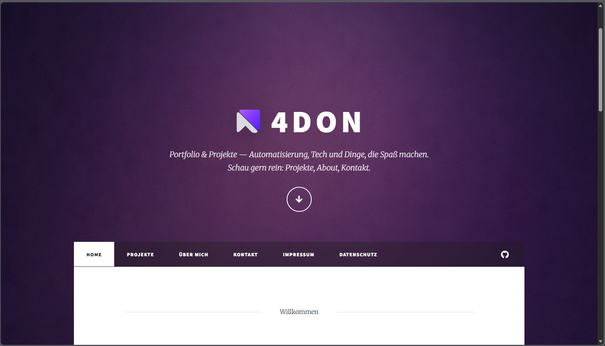

4don Portfolio
Minimalistisch. Purple Ambient. Wartbar. Projekte dynamisch aus JSON — plus sauberes Go-Live Setup.

Ziel
Das 4don Portfolio ist meine persönliche Projektplattform, um Automation- und Maker-Projekte sauber zu dokumentieren. Das Setup ist bewusst minimalistisch und wartbar gehalten: klare Navigation, konsistenter Dark-Purple Look, schnelle Ladezeiten und eine dynamische Projektübersicht (JSON → UI).
Features
Branding & Layout
- ✅Apple-inspired Dark Mode + Purple Ambient Look
- ✅Multi-Page Struktur (Home, Projekte, About, Kontakt, Legal)
- ✅Footer + Copyright-Bar konsistent auf allen Seiten
Projekte System
-
✅
projects.jsonals Quelle (einfach pflegen) -
✅Cards werden per
projects.jsgerendert - ✅Sortierung (neu → alt), Search, Tag-Filter, Badges
- ✅Optionaler GitHub Button + Image-Fallback
Struktur
So ist die Website gedacht (Kurzüberblick):
/
├─ index.html
├─ projects.html
├─ about.html
├─ contact.html
├─ projects.json
├─ robots.txt
├─ sitemap.xml
├─ 404.html
├─ site.webmanifest
├─ legal/
│ ├─ impressum.html
│ └─ datenschutz.html
└─ projects/
├─ rmv-morning-display.html
├─ pi-hole-setup.html
└─ 4don-portfolio.htmlEntwicklung (V1.x)
Kurzes Projekt-Log als “vorzeigbare” Timeline.
Step 1 — Branding & Purple Theme
- Template-Farben bereinigt und Purple Accent konsistent gemacht
- Dark Purple Background (Ambient Look) integriert
Step 2 — Footer & Copyright clean gemacht
- Großer Footer (Kontakt/Links) bleibt
- Legal unten kompakt in der Copyright-Bar
Step 3 — Projekte aus JSON laden
projects.jsonals Datenquelleprojects.jsrendert Cards im Massively Layout
Step 4 — UX Upgrade (Search / Filter / Badges)
- Sortierung: neu → alt
- Search + Tag-Dropdown + Reset
- Badges statt “Tags: …” + optionaler GitHub Button
Step 5 — Release Vorbereitung
- robots.txt + sitemap.xml + 404.html + webmanifest
- Head-Snippets vereinheitlicht (Theme Color, Manifest, SEO)
Roadmap
V1.6 — Content Upgrade
- ⬜Detailseiten pro Projekt (Setup, Screens, Learnings)
- ⬜Demo-Links ergänzen, sobald verfügbar
- ⬜Repos schrittweise public schalten + GitHub Links aktivieren
V1.7 — Design Polish
- ⬜Badges: Spacing/Alignment final perfektionieren
- ⬜Cards: „View Details“ noch cleaner (Icon/CTA)
- ⬜OG Images je Seite (Home/Projects/About)
Go-Live Check (Kurz)
Vor dem letzten Deploy einmal kurz abhaken:
Funktion
- ✅projects.html lädt Daten korrekt
- ✅Search + Filter + Sortierung funktionieren
- ✅Links & Buttons sind korrekt (same tab / external)
Release
-
✅
/robots.txt+/sitemap.xmlerreichbar -
✅
/404.htmlim 4don Look + (optional) noindex -
✅
/site.webmanifestkorrekt (Name, Icons, Theme)